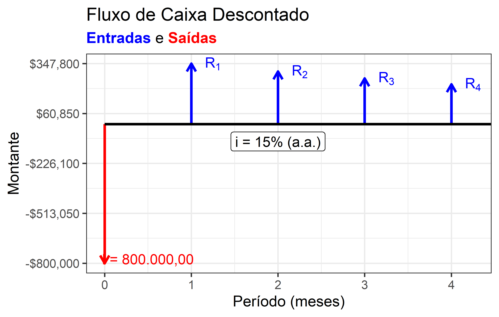

3 Engenharia Econômica
Na sucinta definição de Machline (1966, 51), a Engenharia Econômica, ciência que trata da Análise de Investimentos, “é o estudo da taxa de retorno do capital investido.”. Segundo Machline (1966), ainda, dada a vasta literatura disponível sobre o assunto, numerosos são os métodos disponíveis para calcular e comparar a rentabilidade dos investimentos.
Neste capítulo trataremos da análise de diversos métodos da Engenharia Econômica.
3.1 Análise de Investimentos
A Engenharia Econômica é uma técnica tradicional. Seus métodos evoluíram com o passar dos anos, à medida em que novas ferramentas surgiram, como as calculadoras financeiras e as planilhas eletrônicas, possibilitando o cômputo mais fácil, rápido e preciso de prestações, taxas e outras grandezas.
Não entendemos que os métodos tradicionais, no entanto, ficaram ultrapassados. A aplicação de um outro método, a nosso ver, depende não apenas da precisão do método, porém também do tipo de análise que deve ser feita. Dessa forma, esta seção está dividida em duas subseções: a primeira, que apresenta os métodos tradicionais da engenharia econômica, e a segunda, que apresenta os métodos mais modernos.
Porém, antes de adentrar os métodos de análise de investimentos, é necessário fazer algumas considerações sobre a taxa mínima de atratividade (TMA), que é a taxa de desconto utilizada para a análise dos investimentos. Esta taxa é definida como a taxa mínima aceita pelo investidor como taxa de retorno de um empreendimento (Barbieri, Álvares, e Machline 2007, 132). O valor desta taxa mínima é variável de investidor para investidor, como veremos adiante.
3.1.1 Métodos Tradicionais da Engenharia Econômica
Os métodos tradicionais da engenharia econômica podem ser aproximados, como o Método da Depreciação Linear e juros médios, ou exatos, como o Método do Valor Atual ou o Método do Custo Anual. Sempre que possível, é claro, são preferíveis os métodos exatos. Porém, especialmente para contas preliminares, ou então para uma verificação da ordem de grandeze dos resultados de métodos mais complexos, é útil o conhecimento dos métodos aproximados.
3.1.1.1 Método da Depreciação Linear e juros médios
Este primeiro método de análise trata-se de uma simplificação, podendo ser utilizado através de cálculos mais simples. Tais métodos são úteis para a verificação dos métodos exatos, mais complexos, que serão analisados adiante.
O Método da Depreciação Linear consiste em calcular o custo anual de cada alternativa, que obrigatoriamente deverão transformar um investimento inicial, por exemplo, a aquisição de um imóvel à vista, em parcelas equivalentes ao longo de sua vida útil.
Por exemplo, seja um imóvel de valor inicial igual a R$ 1.000.000,00, com valor residual igual a 20% deste valor. Se feita linearmente, ao longo de um período de 20 anos, a depreciação deste imóvel se fará em parcelas iguais de R$ 40.000,00 (\((1.000.000 - 200.000)\frac{1}{20}\)). Os valores depreciados do imóvel, ano a ano, portanto, serão:
\[ (1.000.000, 960.000, 920.000, \ldots, 280.000, 240.000, 200.000) \]
Caso apliquemos sobre o valor do capital depreciado, ano a ano, uma taxa fixa de retorno sobre o capital empatado, por exemplo, de 10% a.a., obteremos um fluxo de parcelas de retorno sobre o capital (no caso, \([100.000, 96.000, 92.000, \ldots , 28.000, 24.000, 20.000]\)).
O valor do retorno médio sobre o capital emparado pode ser obtido pela simples soma aritmética do primeiro e do último retorno:
\[ R_{médio} = \frac{100.000 + 24.000}{2} = 62.000 \]
O retorno médio ainda poderia ser obtido pela equação 3.1 (Machline 1966, 64), em que \(C\) é o custo de aquisição do bem, \(L\) é o seu valor residual, \(n\) é a sua vida útil e \(i\) a taxa de desconto:
\[ \begin{aligned} \begin{split} R_{médio} &= \frac{1}{2}\left [ (C-L)i + (C-L)\frac{i}{n} \right] + L.i = \\ R_{médio} &= (C-L)\frac{i}{2}.\frac{n+1}{n} + L.i \end{split} \end{aligned} \tag{3.1}\]
Utilizando a equação 3.1 para resolver o exemplo acima, tem-se:
\[ \begin{aligned} \begin{split} R_{Médio} &= (1.000.000 - 200.000)\frac{10\%}{2}.\frac{20+1}{20} + 200.000\times10\% \\ R_{Médio} &= 800.000.5,25\% + 20.000 = 62.000 \end{split} \end{aligned} \]
O Custo Total Anual do Capital é a soma do custo anual depreciado mais custo anual médio do capital empatado. No exemplo:
\[ \begin{aligned} \begin{split} CC_{Anual} &= \frac{C-L}{n} + (C-L)\frac{i}{2}.\frac{n+1}{n} + L.i \\ CC_{Anual} &= \frac{800.000}{20} + 62.000 = 102.000 \end{split} \end{aligned} \]
3.1.1.2 Método do Custo Anual
O Método do Custo Anual (MCA), diferentemente do método da depreciação linear e taxa média de retorno, é um método exato da engenharia econômica.
Basicamente, o método consiste em transformar um custo de aquisição inicial \(C\) numa parcela constante ao longo do período do investimento, através da equação 3.2 (Machline 1966, 87):
\[ P = (C-L)\frac{i(1+i)^t}{(1+i)^t-1} + L.i \tag{3.2}\]
O leitor deve perceber que a equação pode ser escrita em função do FRC:
\[ P = (C-L).\text{FRC}(i\%.n) + L.i \tag{3.3}\]
Por exemplo, para o mesmo exemplo anterior, utilizado para o Método da Taxa Média de Retorno, com o Método do Custo Anual da Equação 3.3, tem-se:
\[ \begin{aligned} \begin{split} P &= (1.000.000-200.000).\text{FRC}(10\%, 20) + 200.000\times 10\% \\ P &= 800.000 \times 0,1175 + 20.000 = 93.967,70 + 20.000 \\ P &= 113.967,70 \end{split} \end{aligned} \]
Percebe-se uma pequena diferença entre os resultados do Método da Taxa Média de Retorno e o Método do Custo Anual, que é exato, salientamos. Essa diferença será menor quanto mais curto for o fluxo de caixa do projeto (o que raramente ocorre no mercado imobiliário) e quanto menor for a taxa de desconto.
Taxa Média de Retorno vs. MCA
Para ciclos de investimento mais curtos e taxas mais baixas, o método da taxa média de retorno é uma aproximação razoável. Para ver isto, imagine a análise de um investimento com prazo comum na ndústria, com depreciação em 5 anos. O custo da máquina é de R$ 1.000.000,00, com valor residual de 20%. A taxa de desconto é de 6% a.a. (lembrar que é comum na indústria o financiamento a juros subsidiados via bancos de desenvolvimento, ou seja, o custo de capital da indústria é mais baixo):
Método da Taxa Média de Retorno:
\[ \begin{aligned} \begin{split} CC_{Anual} &= \frac{1.000.000-800.000}{5} + (1.000.000 - 200.000)\frac{6\%}{2}.\frac{5+1}{5} + 200.000\times6\% \\ CC_{Anual} &= 60.000 + 800.000\times3,60\% + 12.000 = 200.800 \end{split} \end{aligned} \]
Método do Custo Anual:
\[ \begin{aligned} \begin{split} P &= (1.000.000-200.000).\text{FRC}(6\%,5) + 200.000\times 6\% \\ P &= 800.000 \times 0,2374 + 12.000 = 189.917,12 + 12.000 \\ P &= 201.917,12 \end{split} \end{aligned} \]
É possível dizer que os métodos se equivalem para estas condições.
3.1.1.3 O Método do Valor Atual
Nos métodos de análise de investimentos vistos até agora, o custo de aquisição do capital é diluído ao longo dos anos em parcelas constantes, equivalentes ao custo do capital atual (descontado o valor residual). Assim, para ser viável, o imóvel teria que produzir uma renda anual média ao menos equivalente ao custo médio anual do capital calculado, seja através do método da depreciação linear e taxa média de retorno, seja através do método do custo anual.
Com o Método do Valor Atual, a situação se inverte: são as parcelas investidas ao longo dos anos (assim como as rendas recebidas) que são trazidas a valor presente. Assim como o Método do Custo Anual, o Método do Valor Atual também é exato, ou seja, os valores atuais das prestações são calculados de acordo com as taxas de juros compostas de desconto adotadas.
No método do valor atual (Machline 1966, 81–91):
\[ \begin{aligned} \begin{split} C &= P\frac{(1+i)^t-1}{i(1+i)^t} + \frac{L}{(1+i)^t} \\ C &= P.\text{FRC}(i\%,t) + \frac{L}{(1+i)^t} \end{split} \end{aligned} \tag{3.4}\]
Deve-ser ter em mente que devem ser considerados no fluxo de renda os valores líquidos (isto é, os valores brutos, descontados os custos operacionais).
Exemplo do Método do Valor Atual
Um apartamento pode ser alugado ao valor mensal de R$ 1.500,00, dos quais 30% (R$ 450 mensais) são custos operacionais (taxas, impostos, etc.). Considerando que o apartamento estará totalmente depreciado em 30 anos, quando deverá ter um valor residual de R$ 100.000,00, calcular o valor atual justo de mercado do apartamento, a uma taxa de desconto de 12% a.a.
\[ \begin{aligned} \begin{split} C &= [12(1.500-450)].\frac{(1+12\%)^{30}-1}{12\%(1+12\%)^{30}} + \frac{100.000}{(1+12\%)^{30}} \\ C &= 12.600\times0,1241+3.337,80 = 104.833,10 \end{split} \end{aligned} \]
3.1.1.4 O Método do Custo Capitalizado
O Método do Custo Capitalizado é uma variante do Método do Valor Atual, que “consiste em calcular a quantia necessária para renovar e operar perpetuamente os equipamentos.” (Machline 1966, 89).
No método do custo capitalizado, portanto, não serão consideradas a vida útil para o cálculo do número de renovações necessárias do bem, mas que o bem será operado eternamente, desde que renovações sejam sempre realizadas a cada número de períodos (ou seja, a cada número de períodos, o bem é vendido pelo seu valor residual e um novo bem é adquirido).
Segundo Machline (1966, 92), no método do custo capitalizado:
\[ C_{cap} = C + (C-L).\frac{1}{(1+i)^m-1}+\frac{M}{i} \]
Em que:
- \(C\) é o valor do capital inicial aplicado
- \(L\) é o valor residual estimado
- \(i\) é a taxa de desconto
- \(m\) é o intervalo entre as renovações
- \(M\) é o valor de eventuais despesas mensais, como as despesas operacionais
O Método do Custo Capitalizado (MCC) é, em geral, muito utilizado na indústria, onde é comum a operação de equipamentos por tempo indeterminado.
Por exemplo: se uma indústria qualquer precisa considerar a aquisição de um caminhão que custa R$ 1.000.000,00, com vida útil de 10 anos e valor residual de R$ 100.000,00, visando operá-lo de forma perpétua, a um custo operacional (combustível, manutenções, licenciamento, seguros, etc.) de R$ 100.000,00/ano, a uma taxa de desconto de 10% a.a., qual o custo capitalizado total deste caminhão?
\[ \begin{aligned} \begin{split} C_{cap} &= 1.000.000 + \frac{1.000.000 - 100.000}{(1+10\%)^{10}-1}+\frac{100.000}{10\%} \\ C_{cap} &= 1.000.000 + 564.708,60 + 1.000.000,00 \\ C_{cap} &\approx 2.565.000,00 \end{split} \end{aligned} \]
O MCC é um dos métodos preferidos para a comparação de investimentos entre diversas alternativas de equipamentos. Nem sempre o investimento no equipamento com menor desembolso inicial será o mais vantajoso para a indústria. Por exemplo, imagina que a indústria tenha que decidir entre a compra de 4 caminhões como os do exemplo anterior, o que demanda um investimento inicial de R$ 4.000.000,00, porém que tem um custo capitalizado, como vimos, de R$ 10.260.000,00 (\(4\times 2.565.000,00\)) e a implantação de uma esteira transportadora, a um custo inicial mais alto, de R$ 7.500.000,00, que demandaria, porém, renovações apenas a cada 20 anos, com valor residual de 10% e custo operacional de apenas R$ 50.000,00 anuais.
\[ \begin{aligned} \begin{split} C_{cap} &= 7.500.000 + \frac{7.500.00 - 750.000}{(1+10\%)^{20}-1}+\frac{50.000}{10\%} \\ C_{cap} &= 7.500.000 + 1.178.525,00 + 500.000,00 \\ C_{cap} &\approx 9.180.000,00 \end{split} \end{aligned} \]
A conclusão é que, apesar de ser um investimento inicial de valor 87,50% mais alto, o transporte por esteira transportadora, a longo prazo, é preferível ao transporte por caminhões para esta indústria.
Método do Custo Capitalizado no Mercado Imobiliário
Um empresário pretende construir um imóvel comercial do tipo galeria (comércio de rua). O valor de mercado do terreno em que ele pretende construir este imóvel é de R$ 1.000.000,00. O orçamento para a construção do imóvel pretendido é de R$ 4.000.000,00. O valor empresário considera que o valor residual do imóvel é o próprio terreno, ou seja, R$ 1.000.000,00. Após a construção, o empresário julga que terá que investir R$ 12.000,00/ano para administrar o empreendimento. Calcule o custo capitalizado do empreendimento, considerando uma taxa de desconto de 15% a.a. e que serão necessárias renovações (reformas) a cada 10 anos, ao custo de 20% do valor atual de construção do imóvel.
\[ \begin{aligned} \begin{split} C_{cap} &= 5.000.000 + \frac{20\%.4.000.000}{(1+15\%)^{10}-1}+\frac{12.000}{15\%}-1.000.000 \\ C_{cap} &= 5.000.000 + 262.677,70 - 1.000.000 \\ C_{cap} &= 4.262.678,00 \end{split} \end{aligned} \]
3.1.2 Métodos Modernos da Engenharia Econômica
3.1.2.1 Método do Valor Presente Líquido
O Valor Presente Líquido (VPL) é a diferença entre o fluxo de caixa gerado num empreendimento e o investimento nele realizado, condição para que o fluxo de caixa ocorra. O VPL é uma medida da viabilidade de um projeto: se o VPL é positivo, o projeto é viável; se for negativo, é inviável. O VPL é calculado de acordo com a seguinte equação:
\[ VPL = -I + \sum_{t = 1}^T\frac{FC_t}{(1+i)^t} \tag{3.5}\]
Caso os valores líquidos1 do fluxo de caixa no tempo (\(FC_t\)) possam ser considerados constantes e iguais a \(R_l\), a Equação 3.5 torna-se:
\[ \begin{aligned} \begin{split} VPL &= -I + R_l\frac{i.(1+i)^T}{(1+i)^T-1} \qquad\text{ou}\\ VPL &= -I + \frac{R_l}{FRC(i\%,T)} \end{split} \end{aligned} \tag{3.6}\]
A taxa \(i\) a ser utilizada para o cálculo do VPL é chamada de Taxa Mínima de Atratividade, ou simplesmente TMA do projeto.
Como exemplo de utilização do VPL, imagine que uma construtora tenha disponível em caixa o valor de R$ 1.000.000,00 necessários para a aquisição à vista de um terreno para a construção de um edifício residencial, cujas receitas (Valor Global de Vendas, ou VGV) ela espera que somem R$ 10.000.000,00. A construtora estima que possa obter um lucro médio de 20% com a venda das unidades e estima também que as vendas serão distribuídas uniformemente durante um prazo de 5 anos, prazo para a entrega do empreendimento, i.e. a empresa espera faturar R$ 2.000.000,00 por ano. Se a TMA da empresa é de 15% a.a., calcular o VPL do projeto:
\[ \begin{aligned} \begin{split} VPL &= -I + \frac{R_l}{FRC(15\%,5)}\\ VPL &= -1.000.000,00 + \frac{20\%.2.000.000}{0,2983}\\ VPL &= -1.000.000,00 + 1.340.862,04 \\ VPL &= 340.862,04 \end{split} \end{aligned} \] Como o VPL do projeto é positivo, ele é considerado viável!
3.1.2.2 Método da Taxa Interna de Retorno
A taxa interna de retorno é uma medida utilizada para a comparação de diferentes investimentos possíveis. É necessário esclarecer logo de início que a TIR não é uma medida representativa do retorno de um investimento (ver Barbieri, Álvares, e Machline 2007). A TIR nada mais é do que a taxa de desconto que, aplicada ao fluxo de caixa do projeto, torna o VPL igual a zero. Ou seja, fazendo \(VPL = 0\) na Equação 3.5, temos:
\[ 0 = -I + \sum_{t = 1}^T\frac{FC_t}{(1+\text{TIR})^t} \tag{3.7}\]
Como exemplo, imagine que a construtora mencionada no exemplo anterior (VPL), tenha uma alternativa de comprar um terreno mais barato, com custo de aquisição igual a R$ 800.000,00, porém com potencial construtivo menor, de modo que o VGV deste segundo projeto seria de, apenas, R$ 8.000.000,00, com lucratividade de 20%, com prazo de construção igual a 4 anos. Imaginando que a construtora só tenha capacidade de realizar um dos projetos, qual projeto a construtora deveria escolher?
Pelo critério do VPL, teríamos:
\[ \begin{aligned} \begin{split} VPL &= -I + \frac{R_l}{\text{FRC}(15\%,4)}\\ VPL &= -800.000,00 + \frac{20\%.2.000.000}{0,3503}\\ VPL &= -800.000,00 + 1.141.991,35 \\ VPL &= 341.991,35 \end{split} \end{aligned} \] Que é um valor, na prática, igual ao VPL do primeiro projeto (arredondamentos à parte).
É interessante notar, antes de mais nada, que além dos projetos apresentarem mesma lucratividade (20%), eles possuem a mesma razão entre capacidade de geração de receitas e investimento necessário (\(10.000.000,00/1.000.000,00 = 8.000.000,00/800.000,00 = 10\)). Por isso, sem analisar a TIR dos projetos, as pessoas podem ser levadas à conclusões falsas, baseadas em argumentos verdadeiros (falácias). Por exemplo, alguém poderia argumentar que, como os projetos apresentam mesma lucratividade, praticamente o mesmo VPL, porém o primeiro projeto, com VGV maior, permite uma maior lucratividade, pois, na prática, com o primeiro projeto ,a empresa obtem um ano a mais de lucros, que são iguais para ambos os projetos (R$ 400.000,00/ano), e com um investimento inicial de, apenas, R$ 200.000,00 adicionais (em relação ao segundo projeto).
Para desmistificar estes raciocínios impróprios, convém calcular a TIR de ambos os projetos:
\[ \begin{aligned} \begin{split} 0 &= -I_1 + \frac{R_l}{\text{FRC}(\text{TIR}_1\%,5)} \\ 0 &= -1.000.000 + \frac{400.000}{\text{FRC}(\text{TIR}_1\%,5)} \\ \text{FRC}(\text{TIR}_1\%,5) &= \frac{400.000}{1.000.000} \\ \text{FRC}(\text{TIR}_1\%,5) &= 0,4000 \\ \text{TIR}_1 &\approx 29\% \end{split} \end{aligned} \]
\[ \begin{aligned} \begin{split} 0 &= -I_2 + \frac{R_l}{\text{FRC}(\text{TIR}_2\%,4)} \\ 0 &= -800.000 + \frac{400.000}{\text{FRC}(\text{TIR}_2\%,4)} \\ \text{FRC}(\text{TIR}_2\%,4) &= \frac{400.000}{800.000} \\ \text{FRC}(\text{TIR}_2\%,4) &= 0,5000 \\ \text{TIR}_2 &\approx 35\% \end{split} \end{aligned} \]
A conclusão é que o segundo projeto é mais rentável que o primeiro, pois a TIR do segundo projeto (35%) é maior do que a TIR do primeiro (29%).
O erro no raciocínio de que o primeiro projeto gera mais receitas, com mesma lucratividade, portanto é mais rentável que o segundo, é falso! Para entender isso, deve-se considerar que os R$ 200.000,00 investidos a mais no momento da aquisição do terreno tem um custo de oportunidade (estes R$ 200.000,00 poderiam ficar investidos numa aplicação financeira, o que gera uma renda passiva para a construtora, e portanto não pode simplesmente ser comparado ao valor do lucro adicional gerado pelo projeto, que é obtido apenas no quinto ano do projeto).
3.1.2.3 Lucratividade e Rentabilidade de um projeto
A lucratividade de um projeto é a relação entre lucro e faturamento deste projeto. Matematicamente, a lucratividade (\(P\)) pode ser escrita:
\[ P = \frac{L}{R_B} \tag{3.8}\]
Em que \(L\) é o lucro bruto obtido e \(R_B\) a receita bruta do projeto.
Já a rentabilidade de um projeto é a relação entre o retorno obtido e o investimento de capital requerido pelo projeto:
\[ R = \frac{L}{I} \tag{3.9}\]
Nos exemplos anteriores, os dois projetos tinham lucratividade iguais a 20% do faturamento. As suas rentabilidades, no entanto, eram diferntes. No caso do primeiro projeto o retorno sobre o investimento foi calculado em \(341.000,00/1.000.000 \approx 34\%\). Já para o segundo projeto, a rentabilidade calculada foi de \(341.000/800.000 \approx 43\%\).
A rentabilidade, contudo, deve ser vista com cautela: ela representa o retorno total sobre o investimento total, porém não considera o tempo para que o investimento retorne. Ou seja, projetos com maior rentabilidade podem ter menor retorno anual (ou mensal, semestral, etc.) do que um projeto com menor rentabilidade.
No exemplo anterior, o segundo projeto é preferível por conta da maior TIR obtida, não por conta da maior rentabilidade. Existe uma forma correta, contudo, de comparar projetos de acordo com sua rentabilidade. Esta forma é comparar a rentabilidade com o número de anos necessários para obtê-la. Por exemplo, é possível dizer que o segundo projeto é melhor do que o primeiro porque ele apresenta uma rentabilidade de 43% sobre o capital investido em 4 anos, enquanto o primeiro projeto apresenta uma rentabilidade de 34% sobre o capital investido, porém em 5 anos. O analista de investimentos deve ter cuidado, portanto, pois se a situação fosse inversa em questão ao prazo do investimentos, ou seja, se o projeto com rentabilidade maior tivesse um prazo maior (43% em 5 anos) e o projeto com rentabilidade menor tivesse um prazo menor (34% em 4 anos), não se poderia afirmar que o projeto com maior rentabilidade seria superior ao projeto com menor rentabilidade.
Considere que a construtora fez a análise correta e seguiu com o segundo projeto. Porém, ela havia se enganado quanto ao prazo de execução e comercialização deste segundo projeto e, no final, o projeto, ao invés de durar 4 anos, perdurou por 5 anos. O faturamento total permaneceu o mesmo, e também a lucratividade, de 20%. No entanto, o prazo maior resultou num menor faturamento anual, agora de R$1.600.000/ano, e num menor VPL:
\[ \begin{aligned} \begin{split} VPL &= -I + \frac{R_l}{\text{FRC}(15\%,5)}\\ VPL &= -800.000,00 + \frac{20\%.1.600.000}{0,2983}\\ VPL &= -800.000,00 + 1.072.689,63 \\ VPL &= 272.689,63 \end{split} \end{aligned} \]
Com menor VPL, diminui a rentabilidade do projeto: \(272.689,63/800.000=34,09\%\). Ou seja, a rentabilidade do segundo projeto, com a extensão do prazo, passou a ser a mesma do primeiro projeto. Isto significa que eles agora sejam equivalentes? A resposta é sim, pois os projetos agora apresentam a mesma rentabilidade para empreendimentos de mesmo prazo! A TIR atualizada do segundo projeto confirma isto:
\[ \begin{aligned} \begin{split} 0 &= -I_2 + \frac{R_l}{\text{FRC}(\text{TIR}_2\%,4)} \\ 0 &= -800.000 + \frac{320.000}{\text{FRC}(\text{TIR}_2\%,5)} \\ \text{FRC}(\text{TIR}_2\%,5) &= \frac{320.000}{800.000} \\ \text{FRC}(\text{TIR}_2\%,5) &= 0,4000 \\ \text{TIR}_2 &\approx 29\% \end{split} \end{aligned} \]
A nova TIR do segundo projeto agora é idêntica à TIR do primeiro projeto, o que confirma a equivalência de ambos.
3.1.3 Payback
Payback ou tempo de retorno é o tempo necessário para que o capital investido no projeto retorno ao investidor. O payback pode ser calculado de forma simples ou descontado. No payback simples, os valores do fluxo de caixa são somados sem a consideração do efeito dos juros. No payback descontado, o fluxo de caixa do projeto é descontado à taxa mínima de atratividade para o cálculo do tempo de retorno.
O payback simples tem a vantagem de poder ser calculado facilmente. Porém, tem a desvantagem clara de não considerar o efeito das taxas de juros no tempo.
No caso dos projetos a serem escolhidos pela construtora, é fácil verificar que o payback simples do primeiro projeto é de 2,5 anos (\(1000.000,00/400.000,00\)), enquanto que para o segundo projeto, o payback simples é igual a 2,0 (\(800.000,00/400.000,00\)).
Já para o payback descontado, é necessário montar o fluxo de caixa descontado do projeto.
O fluxo de caixa descontado do primeiro projeto pode ser visto na Figura 3.1. Os valores das receitas descontadas são: \(R_1 = 347.826,09\), \(R_2 = 302.457,47\), \(R_3 = 263.006,49\), \(R_4 = 228.701,303\) e \(R_1 = 198.870,69\).
O fluxo de caixa descontado do segundo projeto pode ser visto na Figura 3.2. Os valores das receitas descontadas são: \(R_1 = 347.826,09\), \(R_2 = 302.457,47\), \(R_3 = 263.006,49\) e \(R_4 = 228.701,303\).

Pode-se demonstrar, através da montagem dos fluxos de caixa descontados acumulados, que o primeiro projeto tem payback descontado em meados do quarto ano do projeto, enquanto o segundo projeto tem payback descontado no terceiro ano do projeto.
É claro pela análise do fluxo de caixa do primeiro projeto que os R$ 200.000,00 adicionais investidos no primeiro projeto não retornam no último ano do projeto, ou seja, em seu quinto ano, quando a receita descontada auferida é de, apenas, R$ 198.870,69, portanto menor do que o investimento adicional requerido por este projeto, em relação ao segundo.
3.1.4 TIR Modificada
Existe um aspecto polêmico a respeito da TIR que é totalmente aplicável ao mercado imobiliário: A TIR supõe que, passado o período de payback do projeto, o saldo positivo do projeto pode ser reaplicado à uma rentabilidade igual à TIR do projeto, o que nem sempre é verdadeiro. Especialmente para os projetos com TIR mais altas que, em geral, são muito superiores à remuneração de recursos obtidos nas aplicações comuns do mercado financeiro (ver Barbieri, Álvares, e Machline 2007). Assim, ao menos que sejam abundantes as oportunidades de investimento com retornos equivalentes ao do projeto em análise, assim como a capacidade da empresa de absorver novos projetos, a taxa de investimento dos recursos sobrantes do projeto deveriam render à taxa de rentabilidade das aplicações financeiras comuns.
A realidade de muitas incorporadoras, que não dispõem de recursos próprios para os seus investimentos, é que ela atraia investidores, que exigem uma alta remuneração pelos recursos aplicados. Por outro lado, as incorporadoras em geral não terão capacidade de absorver muitos projetos em paralelo, e as sobras de caixa, usualmente, serão aplicadas no mercado financeiro, a um retorno muito menor do que o do projeto. A taxa de retorno do projeto, assim é muito menor do que a TIR calculada.
Por conta dos problemas descritos acima, foi desenvolvida a TIR modificada, que nada mais é do que a TIR do projeto calculada com taxas diferentes para o financiamento do projeto e para o reinvestimento das sobras.
Está além do escopo deste texto descrever como é calculada a TIR modificada. No entanto, para os projetos em tela, considerando uma taxa de financiamento dos projetos igual à 24% a.a. e uma taxa de reinvestimento de 12% a.a., a TIR dos projetos 1 e 2 resultam iguais a 20,51% e 24,33%, respectivamente. Os valores da TIR modificada são significativamente menores do que os valores da TIR calculada para os projetos considerando-se a mesma taxa para financiamento e reinvestimento dos recursos, que eram de 28,65% e 34,90%.
Valores líquidos significam aqui que os valores das rendas (\(R\)) do projeto já estão subtraídas dos seus custos operacionais (\(C\)), ou seja, \(R_l = R - C\)↩︎